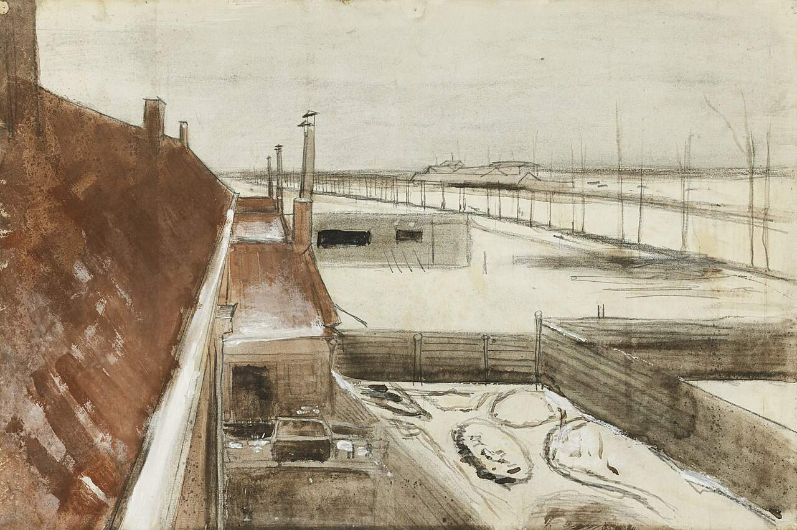
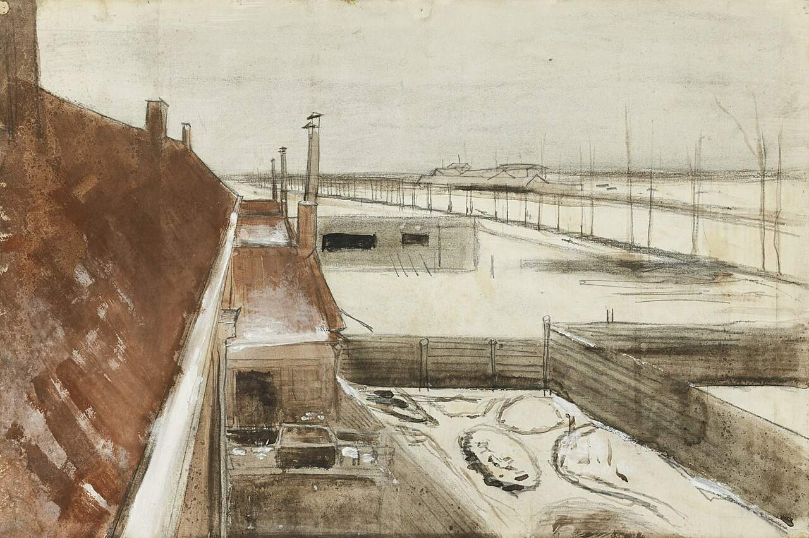

Datos
Curiosos
¿Quién fue Vincent van Gogh?
Vincent van Gogh (1853–1890) fue un pintor postimpresionista holandés, considerado uno de los artistas más influyentes de la historia del arte. Aunque en vida fue casi desconocido y vendió muy pocas obras, su estilo único, caracterizado por colores vibrantes y pinceladas expresivas, revolucionó la pintura. Van Gogh estudió arte formalmente y trabajó inicialmente como comerciante de arte y maestro, pero finalmente se dedicó por completo a la pintura. Sus temas preferidos incluían paisajes, retratos y naturalezas muertas, a menudo reflejando su intensa vida emocional y su conexión con la naturaleza. Hoy en día, sus obras se exhiben en los museos más importantes del mundo y son admiradas por su fuerza emocional y técnica innovadora.
¿Cuántas obras pintó Van Gogh?
Se estima que Van Gogh pintó más de 2,100 obras durante su vida, de las cuales unas 860 fueron cuadros al óleo y el resto dibujos y bocetos. La mayor parte de su producción artística se concentró en los últimos 10 años de su vida, cuando vivió en ciudades como París, Arles y Saint-Rémy. A pesar de la corta duración de su carrera, Van Gogh desarrolló un estilo muy distintivo y experimentó con el color, la luz y la textura de formas innovadoras para la época, creando un legado artístico que ha influido a innumerables pintores posteriores.
¿Qué le pasó en la oreja?
En diciembre de 1888, durante un período de profunda angustia emocional y crisis mental, Van Gogh tuvo un altercado con su amigo y también pintor Paul Gauguin. Tras una fuerte discusión, Van Gogh sufrió un colapso emocional y se cortó parte de su oreja izquierda. Este incidente es uno de los episodios más conocidos de su vida y refleja los problemas de salud mental que lo acompañaron durante años. Tras el incidente, Van Gogh pasó tiempo en hospitales y asilos, donde continuó pintando y explorando nuevas técnicas y estilos artísticos.
¿De qué murió?
Van Gogh murió el 29 de julio de 1890, a la edad de 37 años, debido a una herida de bala autoinfligida, considerada generalmente un suicidio. Tras dispararse en el pecho mientras se encontraba en Auvers-sur-Oise, sobrevivió por dos días, atendido por médicos, hasta su fallecimiento. Su muerte fue el trágico final de una vida marcada por problemas mentales y sociales, así como por la falta de reconocimiento en vida. Aunque sufrió mucho en vida, hoy se le reconoce como uno de los genios del arte mundial.
¿Por qué sus cuadros tienen tanta textura?
Van Gogh desarrolló un estilo muy característico llamado pintura con empaste, que consiste en aplicar la pintura al óleo en capas gruesas directamente sobre el lienzo, creando relieves visibles. Esta técnica le permitía transmitir emociones, movimiento y dinamismo de manera muy directa. Cada pincelada se sentía viva y reflejaba su estado de ánimo, la intensidad de los colores y la energía de la escena representada. Además, su manera de trabajar el color —mezclando tonos complementarios y aplicando trazos en espiral o enérgicos— daba a sus cuadros una sensación de textura, profundidad y vitalidad que los hace inconfundibles incluso hoy.


 
